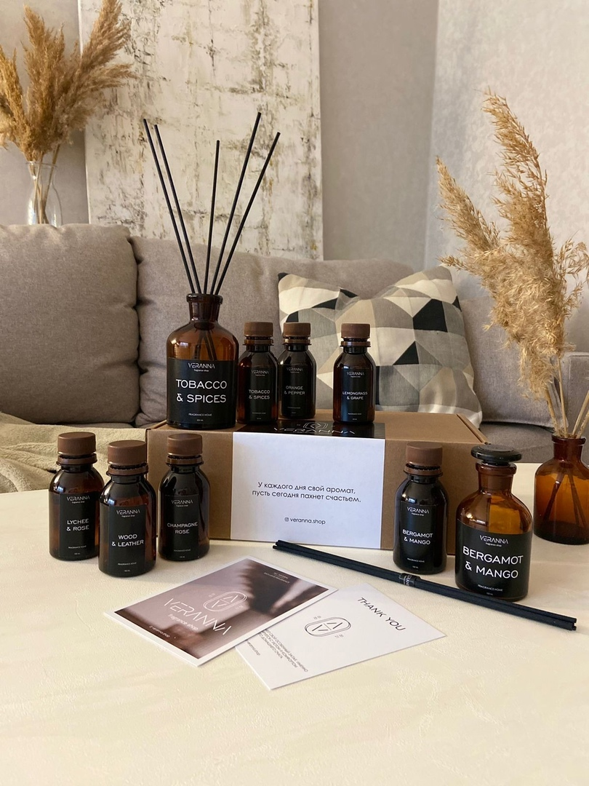
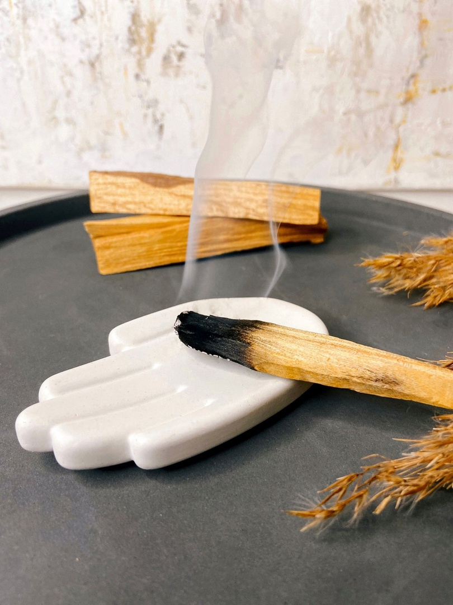
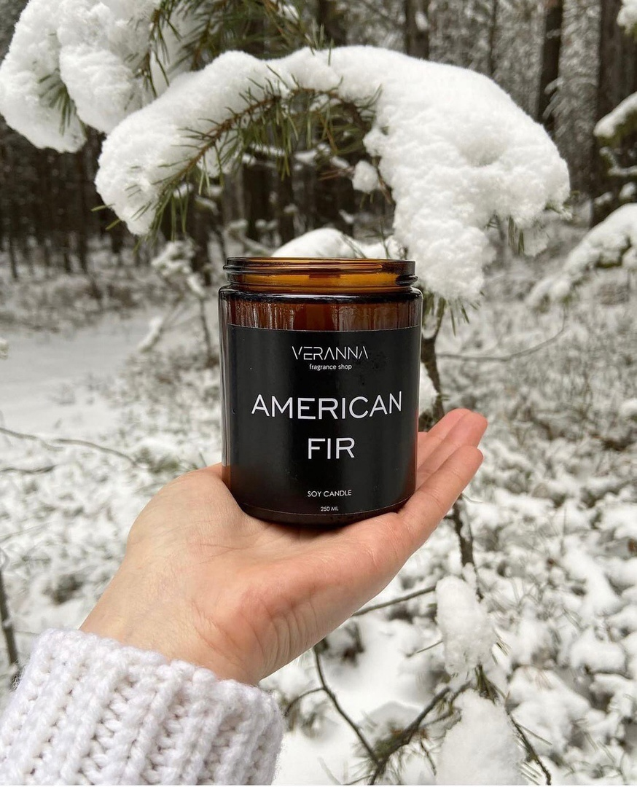

Новости

Наша команда приложит все усилия, чтобы сделать ваше пространство более уютным, теплым и близким к сердцу.
В линейке представлено 7 ароматов:
▪Бергамот & Манго
▪Табак & Специи
▪Кожа & Древесина
▪Личи & Роза
▪Апельсин & Розовый перец
▪Лемонграсс & Виноград
▪Розовое шампанское
Все ароматы можно приобрести в двух объемах:
•100 мл - 1450₽
•200 мл - 1950₽
Наши диффузоры прослужат вам ~ 2-3 месяца.Скорость испарения зависит от количества палочек во флаконе.
Чем больше палочек - тем ярче аромат. Начать можно с трех - четырех штук. И уже через 15 - 20 минут ваше помещение наполнится благоуханием.
Чтобы запах лучше распространялся, нужно движение воздуха. Воздух движется - ароматизации быть! Если потоков воздуха нет- пахнуть не будет.
VERANNA SHOP эксклюзивный бренд ароматов
Вот и настал тот день, когда мы наконец знакомим вас с нашими диффузорами.Наша команда приложит все усилия, чтобы сделать ваше пространство более уютным, теплым и близким к сердцу.
В линейке представлено 7 ароматов:
▪Бергамот & Манго
▪Табак & Специи
▪Кожа & Древесина
▪Личи & Роза
▪Апельсин & Розовый перец
▪Лемонграсс & Виноград
▪Розовое шампанское
Все ароматы можно приобрести в двух объемах:
•100 мл - 1450₽
•200 мл - 1950₽
Наши диффузоры прослужат вам ~ 2-3 месяца.Скорость испарения зависит от количества палочек во флаконе.
Чем больше палочек - тем ярче аромат. Начать можно с трех - четырех штук. И уже через 15 - 20 минут ваше помещение наполнится благоуханием.
Чтобы запах лучше распространялся, нужно движение воздуха. Воздух движется - ароматизации быть! Если потоков воздуха нет- пахнуть не будет.

Пало Санто от природы имеет уникальный состав и вещества, которые способствуют укреплению иммунитета и ускоряют выздоровление после простудных заболеваний.Пало Санто поможет организму расслабиться, настроиться на медитацию или хороший сон. Также считается, что аромат способен очистить пространство от негативной энергии. Пало Санто — переводится с латинского как «Священное дерево», произрастает в странах Южной Америки.
Отличительная особенность — накапливание в древесине большого количества ароматических смол. Именно они оказывают на организм терапевтическое действие. Смолы обладают антибактериальными и иммуностимулирующими свойствами. Пало Санто воздействует не только на организм, но и на пространство вокруг.
Palo Santo/Пало Санто
Это деревянные брусочки, которые получают из самого душистого дерева в мире. Это дерево приравнивается по ценности к сандалу и ладану.Аромат у брусочков очень необычный и многогранный. Запах сладковатой древесины, освежающего цитруса и дыма. Также можно почувствовать характерный запах мяты и сосны.Пало Санто от природы имеет уникальный состав и вещества, которые способствуют укреплению иммунитета и ускоряют выздоровление после простудных заболеваний.Пало Санто поможет организму расслабиться, настроиться на медитацию или хороший сон. Также считается, что аромат способен очистить пространство от негативной энергии. Пало Санто — переводится с латинского как «Священное дерево», произрастает в странах Южной Америки.
Отличительная особенность — накапливание в древесине большого количества ароматических смол. Именно они оказывают на организм терапевтическое действие. Смолы обладают антибактериальными и иммуностимулирующими свойствами. Пало Санто воздействует не только на организм, но и на пространство вокруг.

Соевый воск производят из 100% натурального соевого масла, который безопасен для человека.
В свече VERANNA SHOP объемом 250 мл заключено столько магии, сколько нет и в сотне икеевских свечей.
Все благодаря тому, что мы используем:
- 100% соевый воск премиального качества, имеет сертификаты безопасности и декларацию Vegan Friendly, экологичен и безопасен для вашего дома.
- Деревянный фитиль, который создает приятное потрескивание при горении, его звук можно сравнить с тихим звучанием дров в камине.
- Премиальные аромамасла, произведенные в соответствии с международными стандартами безопасности IFRA и REACH.
- Ароматические свечи VERANNA SHOP созданы вручную с большим трепетом и любовью.
Такая свеча подарит вам до 60 часов наслаждения ароматом и звуком потрескивающего дерева!⠀
Обычные свечи из массмаркета, отличаются своей низкой ценой, за счет состава в который входит парафин и диэтилфталат.
Парафин - является продуктом нефтепереработки, который при горении выделяет в воздух бензол и толуол. Эти два вещества оказывают катастрофически вредное воздействие на организм человека. Бензол обладает мутагенным и аллергическими действиями. А Толуол вообще яд… Вызывает острые и хронические отравления. Диэтилфталат - сложное химическое соединение, при изготовлении которого используется серная кислота. Данный компонент служит для укрепления стойкости аромата и фиксирует его в свече из парафина. Диэтилфталат как и парафин обладает списком негативного воздействия на организм человека, как бесплодием, мутагенным и онкологическим характером. Будьте осознанней, не дай парафиновым свечам причинить вам вред
Почему соевый воск ?
Натуральный соевый воск имеет огромный ряд положительных свойств по отношению к парафину.Соевый воск производят из 100% натурального соевого масла, который безопасен для человека.
В свече VERANNA SHOP объемом 250 мл заключено столько магии, сколько нет и в сотне икеевских свечей.
Все благодаря тому, что мы используем:
- 100% соевый воск премиального качества, имеет сертификаты безопасности и декларацию Vegan Friendly, экологичен и безопасен для вашего дома.
- Деревянный фитиль, который создает приятное потрескивание при горении, его звук можно сравнить с тихим звучанием дров в камине.
- Премиальные аромамасла, произведенные в соответствии с международными стандартами безопасности IFRA и REACH.
- Ароматические свечи VERANNA SHOP созданы вручную с большим трепетом и любовью.
Такая свеча подарит вам до 60 часов наслаждения ароматом и звуком потрескивающего дерева!⠀
Обычные свечи из массмаркета, отличаются своей низкой ценой, за счет состава в который входит парафин и диэтилфталат.
Парафин - является продуктом нефтепереработки, который при горении выделяет в воздух бензол и толуол. Эти два вещества оказывают катастрофически вредное воздействие на организм человека. Бензол обладает мутагенным и аллергическими действиями. А Толуол вообще яд… Вызывает острые и хронические отравления. Диэтилфталат - сложное химическое соединение, при изготовлении которого используется серная кислота. Данный компонент служит для укрепления стойкости аромата и фиксирует его в свече из парафина. Диэтилфталат как и парафин обладает списком негативного воздействия на организм человека, как бесплодием, мутагенным и онкологическим характером. Будьте осознанней, не дай парафиновым свечам причинить вам вред